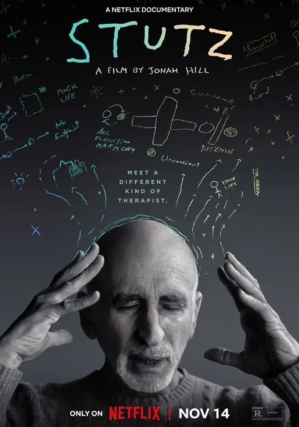

글. 정지은
자료제공. Netflix
색채가 빠진 화면 속에 두 사람이 있다. 할리우드 배우 조나 힐과 그의
심리치료사 필 스터츠 박사다. 두 사람은 실제의 관계가 그러하듯,
서로에게 조금 특별한 내담자와 치료사로서 대화를 시작한다. 두 사람이
대화하는 것, 그것이 전부다. 그리고 그 대화가 이 다큐멘터리의 모든 것이
된다.
외모 콤플렉스, 형의 죽음 등 복합적인 문제로 오랜 시간 불안과 우울에
시달려온 조나 힐은 스터츠 박사의 ‘도구들(The Tools)’을 더 많은
이들에게 전하고 싶어 영화를 만들게 되었다고 말한다. 어딘가 공허하다고,
무언가 빠져있다고 느껴왔던 전통적인 심리치료와 달리 스터츠 박사가 건넨
도구들은 그의 삶을 실제적인 변화로 이끌었기 때문이다.
도구들은 우리가 심리적인 문제와 내면의 불안으로 괴로울 때 어떻게
행동해야 할지 알려주는 실질적 대처법이다. 스터츠 박사는 우선 X
파트(부정의 목소리), 그림자(외면하고 싶은 치부), 스냅샷(이상 지향적
사고방식), 미로(방치되고 허비된 삶)로 상징화한 우리 내면의 어두운
부분을 회피하지 않고 직시하는 것이 가장 중요하다고 말한다. 억누르거나
외면할수록 몸을 키우는 그것들로부터 눈 돌리거나 달아나지 말고, 똑바로
바라보며 온전히 나의 일부로 인정해야 한다고 말이다. 그리고 그것을
가능하게 할 도구들의 사용법을 알려준다.
영상미는 화려하지 않다. 명암만이 존재하는 흑백의 화면이 흘러가고,
마찬가지로 흘러가는 대화 속에 스터츠 박사가 흔들리는 선으로 그려낸
도구들-진주 목걸이(전진하는 힘), 능동적 사랑(분노를 사랑으로 전환하는
방법), 적극적 수용(의미와 의지, 믿음 찾기), 감사의 흐름(마음의
먹구름을 뚫고 나아가는 힘), 상실 대처법(애착을 버리는 힘)-이 하나씩
소개될 뿐이다. 자칫 무거울 수 있는 주제를 다루면서도 두 사람은 유머를
잃지 않는다. 각자의 X 파트를, 연약함을 드러내며 그들은 어느새 치유의
당사자가 되고, 두 사람의 이야기는 모두의 이야기가 된다.
스터츠 박사는 심리적 문제로 고통받는 이들에게 “도구들이 있다면 상황을
바꿀 수 있다”고 조언한다. 다만 그 변화를 위해서는 실천이 필요하다고.
이제 우리는 내면의 X 파트를 직면할 때마다 그가 건넨 도구들을 활용해
주체적 삶을 살아볼 수 있을 것이다. 나쁜 감정과 괴로운 기억에 얽매이지
않고, 매 순간 진주 한 알을 꿰며 나아가는 삶을 말이다.

장르
상영시간
감독
출연
다큐멘터리
96분
조나 힐
조나 힐, 필 스터츠